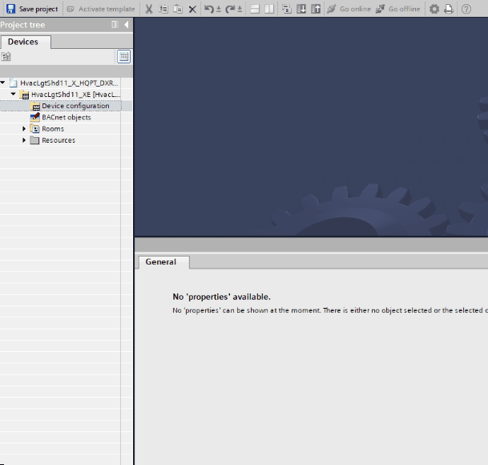

配置并下载到设备
在将设备配置下载到您的设备之前，您需要配置 IP 地址。
Configure the IP address of your deviceExample: Configure IP address

- Go to the Room programming editor.
Duplicating and programming - Open Device configuration.
- In Properties > BACnet/IP interface, select Fixed IP.
- Enter the IP address of your device.
- In the toolbar, click Save project.
Download the configuration to your device
- You have configured the IP address.
- Select the device.
- In the toolbar, click Download to device.
- Select the discovered device.
- Click Configure.
- Click Load.
- The Load preview window displays, and the configuration is checked for errors.
- Click Load.